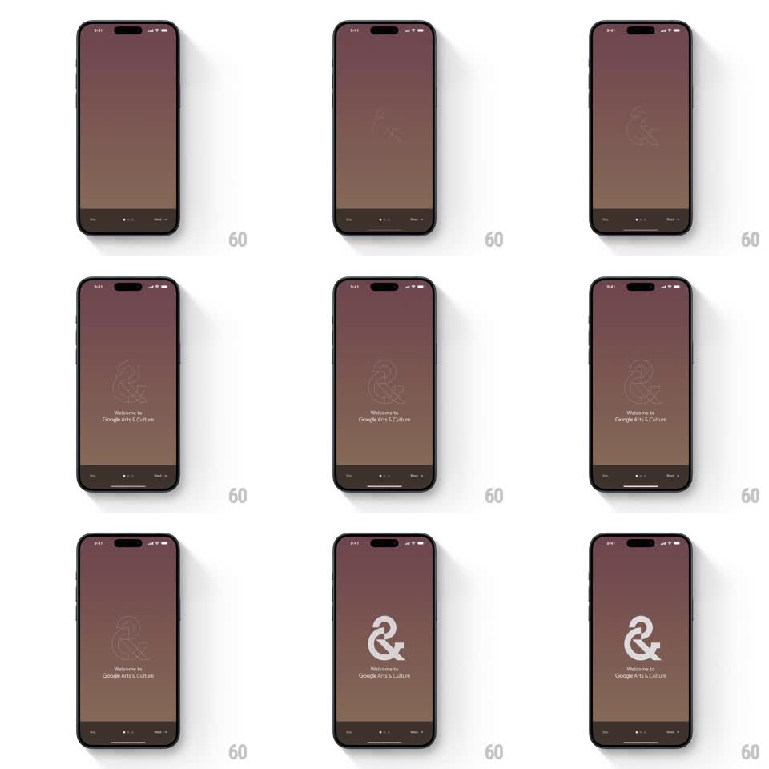

Media
Frame-by-frame

Rebuild this animation 1:1: Google Arts & Culture's launch - the ampersand logo draws itself as a thin line on the mauve splash, then the stroke fades into the solid white mark as the welcome text appears below.

Rebuild this animation 1:1: Google Arts & Culture's launch - the ampersand logo draws itself as a thin line on the mauve splash, then the stroke fades into the solid white mark as the welcome text appears below. ## Integration Integration: stack-agnostic spec - springs given as stiffness/damping, timed motions as duration + curve; map every value to your framework and animation library of choice. ## Scene Mauve splash: center stage for the "&" mark, "Welcome to Google Arts & Culture" beneath it, Skip / page dots / Next pinned at the bottom. ## Motion spec Pattern: stroke-draw -> fill, ~2s. - The ampersand path strokes on (stroke-dashoffset animation, 1.2s, ease-in-out) as a hairline single-weight outline. - When the stroke completes, the solid fill fades in (400ms) while the stroke fades out - the mark reads as filling up, not swapping. - "Welcome to Google Arts & Culture" fades in below (300ms) as the fill lands. - Bottom controls are static throughout. ## Calibration - The stroke is one continuous path in a natural handwriting order; segmented drawing reads as a progress bar. - Stroke and fill overlap by ~100ms - a hard cut between them flickers. ## Reduced motion Solid logo fades in (300ms); no draw. ## Don't miss - The mark never changes size or position across the stroke-to-fill handoff. - Keep the hairline genuinely thin; a chunky stroke makes the fill invisible when it lands.